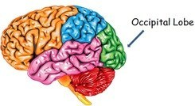

Studying the brain is a difficult task, particularly since some areas compensate for others when the brain suffers damage. The brain's sensitive, dense, and complex nature means that researchers are constantly uncovering new structures within the brain, and new functions for each brain lobe. The occipital lobe is no exception to this rule. Researchers once thought that the occipital lobe only controlled visual functions. But in recent years, they discovered that some portions of this lobe receive inputs from other brain regions. Specifically, a brain region called the dorsomedial stream receives input both from regions of the brain related to vision, and to areas that are not linked to visual processing. This suggests either that the occipital lobe may perform additional functions, or that researchers have not identified all regions of the brain associated with visual processing. Although we know that the occipital lobe is dedicated to vision, this process is highly complex, and includes a number of separate functions. Those include: Mapping the visual world, which helps with both spatial reasoning and visual memory. Most vision involves some type of memory, since scanning the visual field requires you to recall that which you saw just a second ago. Determining color properties of the items in the visual field. Assessing distance, size, and depth. Identifying visual stimuli, particularly familiar faces and objects. Transmitting visual information to other brain regions so that those brain lobes can encode memories, assign meaning, craft appropriate motor and linguistic responses, and continually respond to information from the surrounding world. Receiving raw visual data from perceptual sensors in the eyes' retina.
A spinal tap places a needle into the spinal canal to drain a small amount of cerebral spinal fluid that is tested for infection or other abnormalities, according to the NIH. 